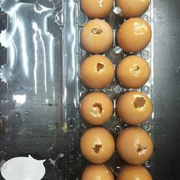

Trứng gà nướng Thái Lan là món ăn vặt ngon rất được yêu thích. Bạn thường ăn trứng gà nướng Thái Lan ở các quầy vỉa hè. Bạn lo ngại về an toàn thực phẩm, thế thì thay vì mua thì bạn tự làm trứng gà nướng Thái Lan để đãi cả nhà luôn nha. Vị thơm ngon hơn hẳn, chỉ tốn công một xíu thôi, mà đã giải có món ăn vặt ngày mưa cực đã. Thử làm ngay bạn nhé!
Nguyên liệu 6 Thực hiện h Phần 04 người Độ khó Trung bình
Nguyên liệu làm trứng gà nướng thái lan
Dụng cụ thực hiện làm trứng gà nướng thái lan
- Trứng gà 12 Quả
- Nước mắm 1 Muỗng canh
- Đường trắng 1 1/2 Muỗng cà phê
- Mật ong 1 Muỗng canh
- Muối 1 Muỗng cà phê
- Tiêu 2/3 Muỗng cà phê
Cách làm trứng gà nướng thái lan
Thực hiện 1 h 0m
Thực hiện
Bước 1
Chọn mua trứng gà đã kiểm dịch. Dùng dao có đầu nhọn và sắc. Gõ nhẹ đục 1 lỗ nhỏ lên đầu trứng (đầu lớn)
Bước này bạn cẩn thận, không ngoáy, không mạnh tay, trứng sẽ bị vỡ
Bước 2
Chuẩn bị 1 thau lớn, khi lòng trứng còn trong vỏ, dùng tâm khuấy đều trực tiếp bên trong trứng gà lên, cách này để dễ trút hết lòng trứng ra ngoài. Dùng tay vẫy vẫy, trút lòng đỏ và lòng trắng vào thau.
Bước 3
Nêm vào thau trứng, 1 muỗng canh nước mắm, 1,5 muỗng cà phê đường, 1 muỗng canh mật ong, 1/2 muỗng cà phê muối, 2/3 muỗng tiêu xay. Khuấy đều bằng đũa, đến khi lòng trắng và lòng đỏ hòa vào nhau không bị lợn cợn là được nhé. Nếu kỹ hơn, có thể lọc qua rây 1 lần nữa.
Bước 4
Giữ lại vỏ trứng. Mang vỏ đi rửa dưới vòi nước, thật nhẹ tay nhé. Cho nước vào bên trong trứng rửa sơ, chà nhẹ tay bên ngoài vỏ trứng.
Do bước này mình sợ tanh và dơ nên mới kỹ, thật ra bạn bỏ qua bước này vẫn được nhé, trứng cũng được hấp chín hết à, không tanh đâu.

Bước 5
Khéo léo, đổ ngược phần lòng đỏ và lòng trắng đã được đánh tan vào vỏ trứng. Dùng 1 cái ca nhỏ có miệng nhọn, nếu không có bạn có thể dùng ống bơm kim tiêm, nhưng theo kinh nghiệm của mình thì ống kim tiêm khi bơm vào tạo bọt khí nhiều, sau hấp sẽ bị rổ trứng, ăn không ngon.
Bước 6
Đổ lần lượt đến khi hết số vỏ trứng. Lưu ý, không đổ đầy vỏ, chỉ đổ gần đầy. Vì khi trứng hấp sẽ còn nhô cao hơn, nếu đổ đầy sẽ dẫn đến trứng phồng lên mặt làm vỡ vỏ trứng khi hấp.

Bước 7
Đun sôi nước trong nồi hấp. Xếp trứng vào xửng, nếu xửng trơn bạn có thể lót 1 lớp khăn ướt phía dưới rồi lần lượt sắp xen kẽ vào. Đậy nấp hấp chín với lửa vừa. Thỉnh thoảng mở nắp canh trứng.
Bước 8
Bạn nhớ canh chừng trứng thường xuyên, khi trứng vừa se mặt trên đông lại là được, không để lâu trứng sẽ nở bông bể vỏ.
Bước 9
Khi ăn, cho lên vỉ nướng than nướng chín đều lại lần nữa. Trứng sẽ thơm, bùi bùi, nhất là có vị tiêu cay cay cực kích thích vị giác. Chấm kèm với muối tiêu chanh nữa mới đúng vị à ngen.
Chúc bạn thực hiện thành công món ngon mỗi ngày này nhé

{kind=link}